Ruta por la isla más grande de Grecia entre playas, pueblos y ruinas históricas
Creta es la isla más grande de Grecia y uno de los destinos más completos del Mediterráneo. Playas de agua turquesa, montañas, gargantas naturales y pueblos con mucho encanto hacen que recorrer la isla sea una experiencia increíble.
La mejor forma de descubrir Creta es alquilar un coche y recorrer la isla a tu ritmo. De esta manera podrás visitar playas escondidas, pueblos tradicionales y algunos de los lugares históricos más importantes de Grecia.
Mi recomendación personal es alojarse en La Canea (Chania) si es tu primera vez en Creta. Es la ciudad más bonita y tiene mucho encanto. Si buscas una mezcla de playa e historia, elige Rétino (Rethymno), que tiene playa urbana y casco antiguo. Para presupuestos ajustados o si quieres visitar Knossos, Heraklion es la mejor opción. Si buscas lujo y tranquilidad, Elounda es imbatible.
🚗 Alquilar coche en Creta: Es casi imprescindible si quieres explorar la isla. Las distancias son grandes (de La Canea a Heraklion hay 2 horas en coche). Alquilar un coche te da libertad para descubrir calas escondidas y pueblos de montaña. Los precios son asequibles (30-50€/día en temporada baja).
🚌 Autobuses (KTEL): El sistema de autobuses conecta las principales ciudades y pueblos. Es económico, pero los horarios son limitados y no llega a todas las playas. Útil si no quieres alquilar coche, pero te perderás los rincones más remotos.
🏠 Alternativas: Los apartamentos turísticos (Airbnb) y los estudios familiares son muy populares en Creta. Muchos cretenses alquilan habitaciones en sus propias casas ("rooms to let"). Es una forma económica y auténtica de conocer la cultura local.
🚫 Zonas a evitar: Evita alojarte en los grandes resorts todo incluido si buscas autenticidad (están aislados y no conocerás la cultura cretense). También evita las zonas industriales de Heraklion o La Canea (sin encanto y ruidosas).
🌊 Mejor época para visitar Creta: Primavera (abril-junio) y otoño (septiembre-octubre) son las mejores épocas: buen clima, menos multitudes y precios más bajos. Julio y agosto son muy calurosos (40°C) y masificados. El invierno es tranquilo pero muchos hoteles cierran.
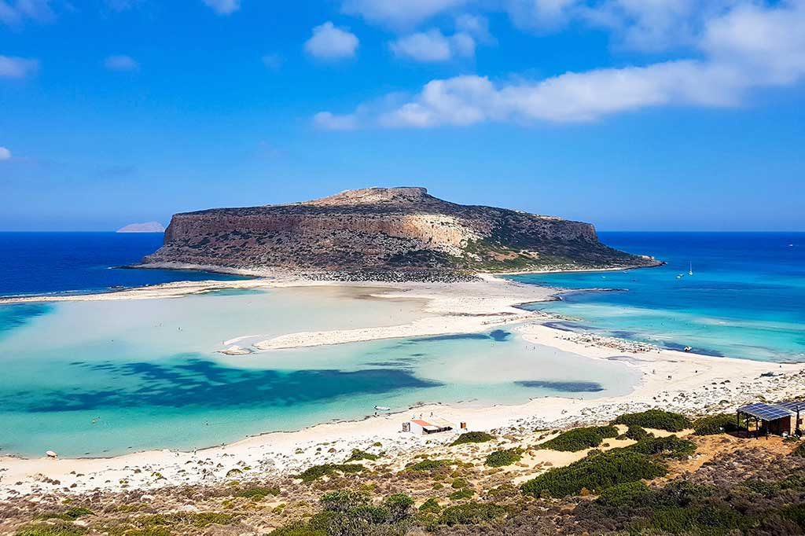
La laguna de Balos es uno de los lugares más espectaculares de Creta. Sus aguas turquesas poco profundas y su arena blanca crean un paisaje que recuerda al Caribe. Se encuentra en el noroeste de la isla.
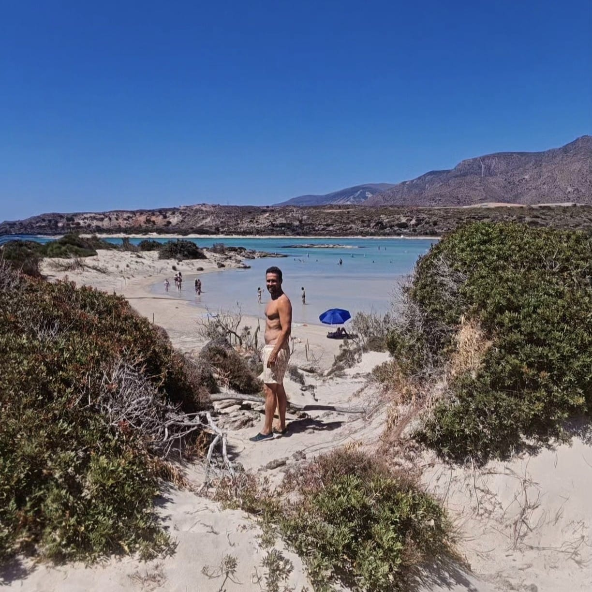
Elafonissi es una de las playas más famosas y espectaculares de Creta, conocida especialmente por su característica arena rosada, formada por diminutas conchas trituradas que le dan un aspecto único. Sus aguas son cristalinas, poco profundas y de tonos turquesa, lo que la convierte en un lugar ideal tanto para bañarse como para relajarse durante horas.
Además, la playa está rodeada de un entorno natural protegido, con dunas y pequeñas lagunas que permiten caminar incluso hacia una pequeña isla cercana cuando el nivel del agua es bajo. Es perfecta tanto para familias como para quienes buscan paisajes paradisíacos. Sin duda, es uno de los lugares imprescindibles de la isla.
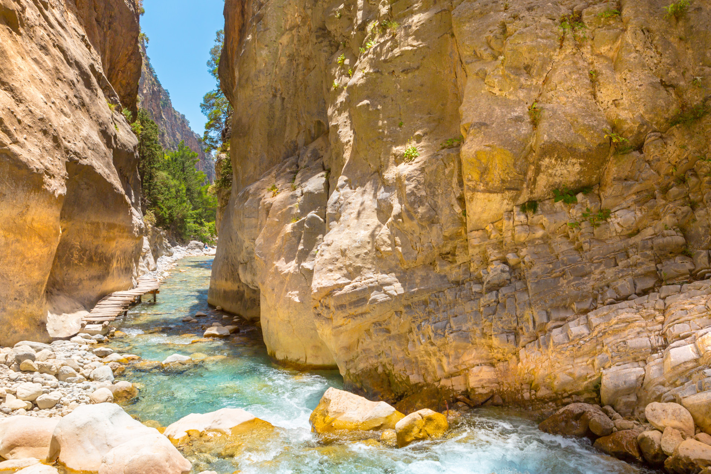
La Garganta de Samaria es uno de los paisajes naturales más impresionantes de Creta y el cañón más largo de Europa. Este espectacular sendero se extiende a lo largo de unos 16 kilómetros atravesando montañas, bosques de pinos y paredes de roca que alcanzan cientos de metros de altura.
Durante la ruta, podrás disfrutar de una gran variedad de paisajes y fauna, incluyendo la cabra salvaje cretense (kri-kri). Uno de los puntos más famosos es “Las Puertas de Hierro”, donde el desfiladero se estrecha hasta solo unos pocos metros. La caminata suele durar entre 5 y 6 horas y termina en el mar de Libia, donde podrás relajarte tras el esfuerzo. Es una experiencia única para los amantes del senderismo.
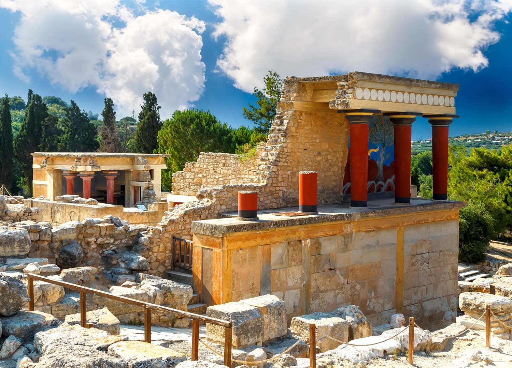
El Palacio de Knossos es el yacimiento arqueológico más importante de Creta y uno de los más relevantes de toda Grecia. Fue el centro de la civilización minoica, considerada una de las más antiguas de Europa, y está estrechamente ligado a la mitología griega. Según la leyenda, aquí se encontraba el famoso laberinto donde habitaba el Minotauro.
Hoy en día, los visitantes pueden recorrer sus ruinas, admirar sus murales reconstruidos y descubrir cómo era la vida en esta avanzada civilización. El complejo incluye salas ceremoniales, patios, almacenes y viviendas que muestran el alto nivel de organización de la época. Es una visita imprescindible para los amantes de la historia y la cultura.
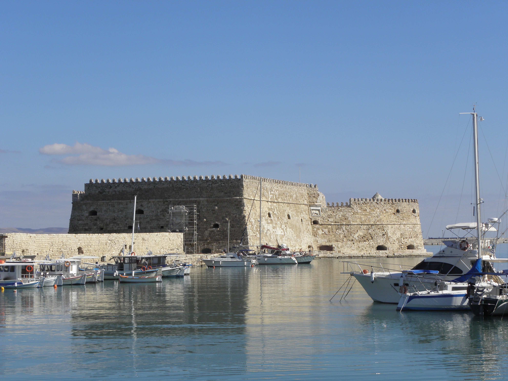
Heraklion es la capital de Creta y una ciudad vibrante que combina historia, cultura y vida moderna. Su puerto veneciano y la fortaleza de Koules son algunos de sus principales símbolos, recordando el pasado marítimo de la ciudad.
Uno de sus mayores atractivos es el Museo Arqueológico de Heraklion, considerado uno de los más importantes de Grecia, donde se conservan numerosas piezas de la civilización minoica. Además, la ciudad cuenta con una animada vida local, con mercados, restaurantes y cafés donde disfrutar de la gastronomía cretense. Es un excelente punto de partida para explorar la isla.
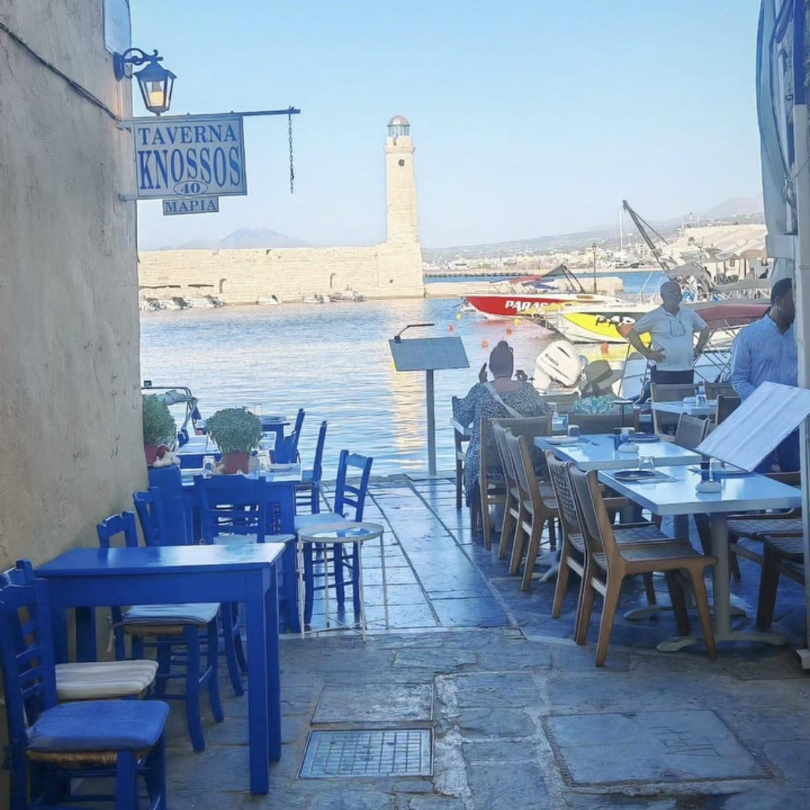
Chania es, para muchos, la ciudad más bonita de Creta. Su famoso puerto veneciano, con edificios de colores y un faro emblemático, crea un paisaje de postal especialmente al atardecer. Pasear por sus calles estrechas es una experiencia única, llena de historia, tiendas locales y restaurantes tradicionales.
La ciudad mezcla influencias venecianas, otomanas y griegas, lo que se refleja en su arquitectura y su ambiente. Además, su oferta gastronómica es excelente, con numerosos lugares donde probar platos típicos de la isla. Es un destino perfecto para perderse sin rumbo y disfrutar del encanto mediterráneo.
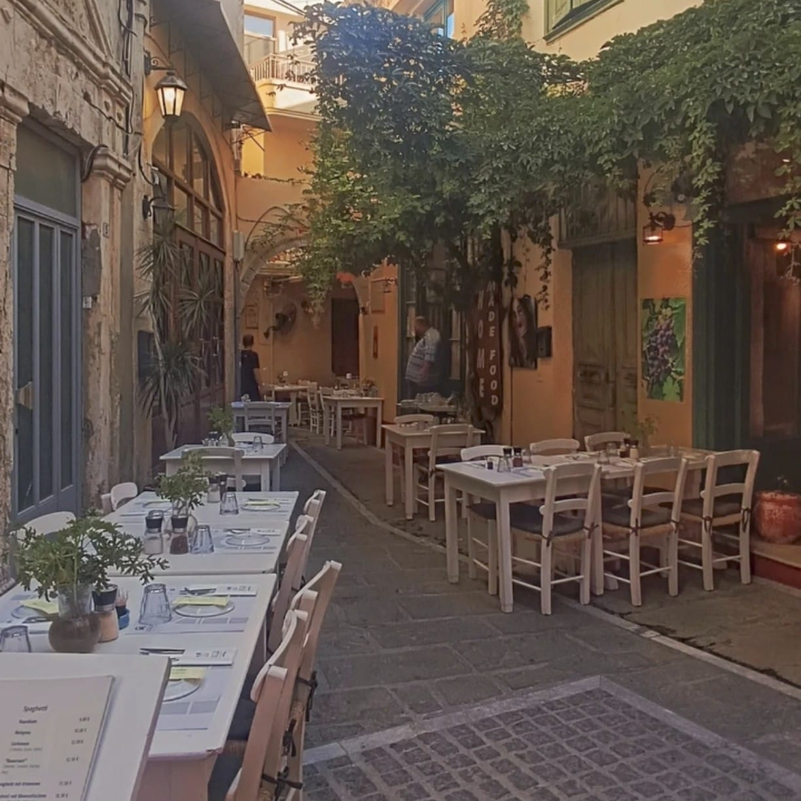
Rethymno es una ciudad que destaca por su precioso casco antiguo, donde se mezclan influencias venecianas y otomanas. Sus calles estrechas, llenas de balcones de madera, arcos y pequeñas plazas, crean un ambiente muy auténtico y acogedor.
Uno de sus principales atractivos es la fortaleza veneciana (Fortezza), situada junto al mar, desde donde se obtienen unas vistas espectaculares. Además, la ciudad cuenta con una larga playa y una animada vida cultural. Es un lugar perfecto para combinar historia, relax y ambiente local.
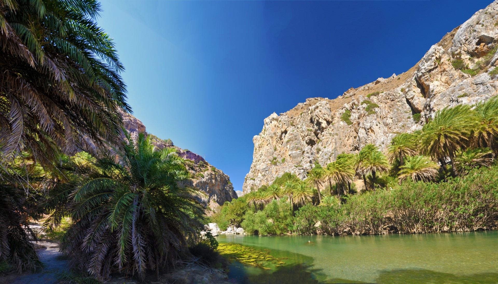
La playa de Preveli es uno de los lugares más singulares de Creta, ya que combina mar, río y un impresionante bosque de palmeras. El río Kourtaliotiko desemboca directamente en la playa, formando una especie de laguna rodeada de vegetación, lo que crea un paisaje exótico y diferente al resto de la isla.
Para acceder a la playa hay que descender por un sendero con vistas espectaculares, lo que añade un toque de aventura a la visita. Es un lugar ideal tanto para bañarse en el mar como en el río, o simplemente relajarse rodeado de naturaleza. Sin duda, uno de los rincones más especiales de Creta.
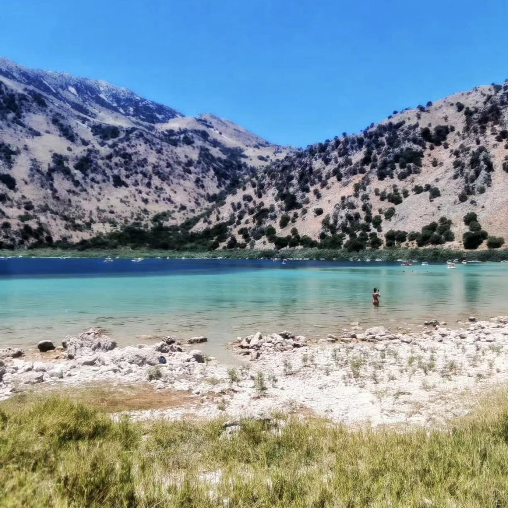
Lake Kournas es el único lago natural de agua dulce de toda Creta y uno de los lugares más tranquilos de la isla. Está rodeado de montañas y naturaleza, lo que crea un entorno muy relajante y diferente a las típicas playas.
En sus aguas se pueden alquilar barcas de pedales para recorrer el lago, o simplemente disfrutar del paisaje desde sus orillas. También es posible bañarse en algunas zonas. Es un destino ideal para quienes buscan un ambiente más calmado, perfecto para descansar después de varios días de turismo intenso.
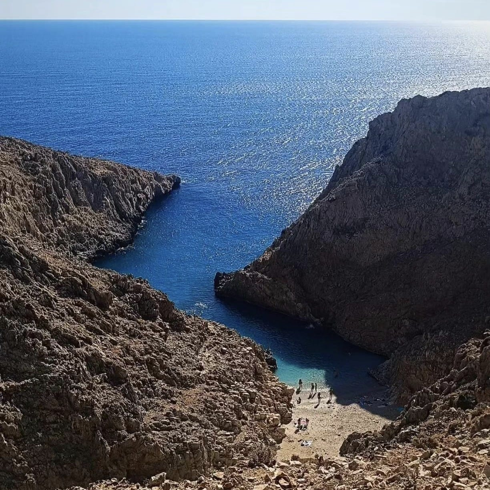
Seitan Limania es una de las playas más espectaculares y sorprendentes de Creta, escondida entre altos acantilados que forman una estrecha cala de aguas turquesas intensas. Su paisaje es realmente único y muy fotogénico, lo que la convierte en uno de los lugares más impresionantes de la isla.
El acceso no es sencillo, ya que hay que bajar por un sendero empinado desde la carretera, pero las vistas durante el descenso y la belleza del lugar hacen que el esfuerzo merezca totalmente la pena. Es recomendable llevar calzado adecuado y agua. Una vez abajo, podrás disfrutar de un entorno salvaje y espectacular.
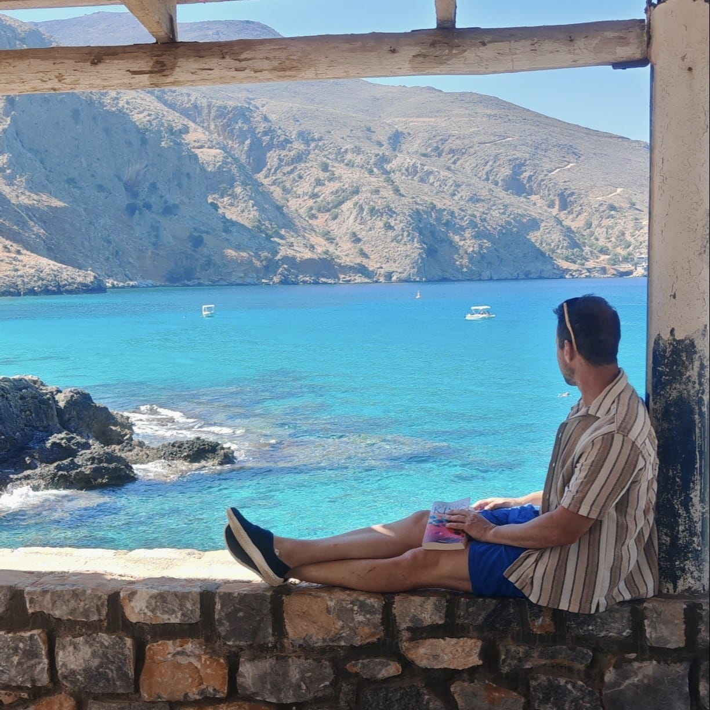
Omprogialos Beach es una pequeña cala rocosa situada en la costa norte de Creta, cerca del tranquilo pueblo de Kefalas. A diferencia de otras playas más turísticas, este lugar destaca por su ambiente relajado y poco masificado.
Sus aguas son extremadamente claras, lo que la convierte en un sitio ideal para practicar snorkel y disfrutar del fondo marino. Aunque no tiene arena, las plataformas de roca permiten acceder fácilmente al agua. Es perfecta para quienes buscan un rincón más auténtico y tranquilo lejos de las multitudes.
En Creta, la dieta mediterránea está en su máxima expresión. El aceite de oliva cretense es de los mejores del mundo. No te vayas sin probar las verduritas silvestres (horta) y el dakos. Los precios son más bajos que en el resto de Europa: con 15-20€ comes un menú completo en una taberna local.
🛒 Dónde comprar productos locales: En los mercados municipales de Chania o Heraklion encontrarás aceitunas, queso graviera, miel de tomillo y hierbas aromáticas del monte Ida.
🍷 Vino cretense: Las bodegas de la región de Peza (cerca de Heraklion) producen vinos tintos excelentes. Pide un Dafni o un Kotsifali para acompañar la comida.
{kind=link}
{kind=link}
{kind=link}
{kind=link}
{kind=link}
{kind=link}
{kind=link}
{kind=link}
{kind=link}
{kind=link}
{kind=link}
{kind=link}
{kind=link}
{kind=link}
{kind=link}
{kind=link}
{kind=link}
{kind=link}
{kind=link}
{kind=link}